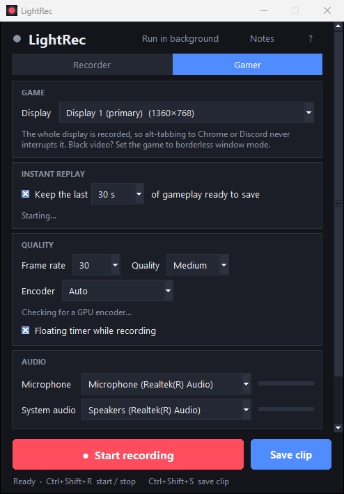
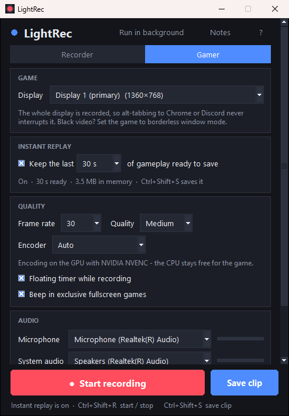

LightRec
The screen recorder that stays out of your way.
One small window. No install, no account, no watermark, no upload.
Portable builds with ffmpeg inside. Unzip, double-click, record. Free and open source (MIT).
Full screen, an area you drag out, or one window. Mic and system audio with live meters. Pause, countdown, global shortcuts. Standard .mp4 that plays everywhere.
Instant replay keeps your last 15 s to 2 min ready; one key saves it. Record whole sessions on the GPU. Alt-tab all you want, nothing breaks.
Nothing leaves your PC. No telemetry, no cloud, no time limit. Hide windows from the recording and keep your notes on screen without recording them.
Gamer mode: the Game Bar replacement
Ever lost a clip because Game Bar "stopped recording" the moment you tabbed out? Gamer mode records the whole display, not a window, so switching to Chrome or Discord in the middle of a match changes nothing.
- Instant replay. Keep the last 15 s, 30 s, 1 min or 2 min of gameplay in memory. Press
Ctrl+Shift+Sand the clip is saved, with a small notice in the corner (a quiet beep over games in exclusive fullscreen, where nothing can be drawn). Each save empties the buffer, so the next clip picks up where the last one ended. - Long sessions.
Ctrl+Shift+Rrecords for hours. Instant replay keeps working while a session records. - GPU encoding. NVIDIA NVENC, AMD AMF or Intel Quick Sync, picked automatically, so the CPU stays free for the game.
- Lives in the tray. Run in background and LightRec sits next to the clock: blue when replay is ready, red when recording. Right-click to save, record, open or quit. Start it with
--trayfrom your Startup folder and it is simply always there.


Recorder mode
- Record the full screen, an area you drag out, or a single window (on Windows the window itself, even when other windows cover it).
- Hide windows from the recording: on Windows they are replaced by whatever is behind them, so viewers never know they were there.
- A built-in Notes panel for your script that never shows up in the video.
- Microphone and system audio, mixed into the video. Pause, a 3-second countdown, a floating control bar, 15 to 60 fps, three quality levels.
Good to know
- Windows 10 / 11. The exe isn't code-signed, so SmartScreen may ask once: More info, then Run anyway.
- Linux. X11 sessions. System audio through PulseAudio / PipeWire monitors; window recording needs
wmctrl. - Black video in a game? Exclusive-fullscreen games bypass the desktop. Switch the game to borderless window mode.
Private by design
LightRec makes no network connections except, if you choose it, the one-time ffmpeg download when running from source. Recordings go to the folder you pick and nowhere else. The code is open: github.com/Hodaifa98/LightRec.